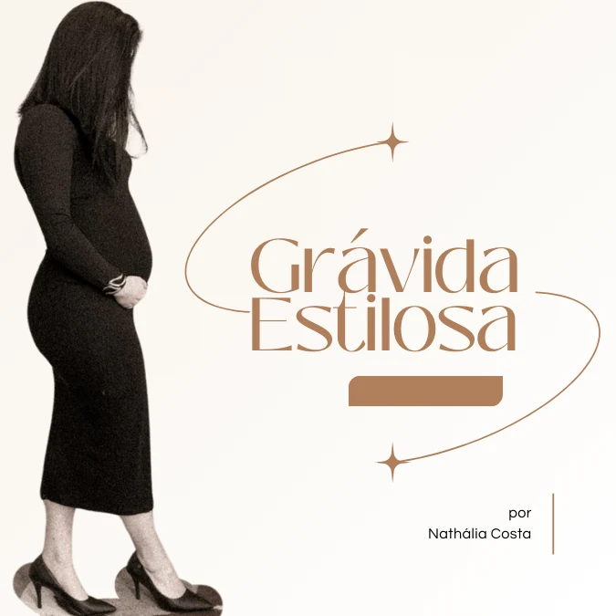

Análise independente · Curso online · Hotmart
Vestir-se durante a gestação sem comprar por tentativa e erro
O corpo muda de um mês para o outro, o guarda-roupa não acompanha e a lista de gastos só cresce. O Grávida Estilosa é um curso online de imagem e estilo para essa fase. Reunimos aqui o que dá para confirmar sobre ele, o que ainda não dá e como decidir com calma.
O botão abre a página do curso na Hotmart em outra aba. Confira preço e condições lá antes de comprar.

Por que o guarda-roupa vira um problema
Durante a gestação, o corpo passa por mudanças contínuas: as peças que serviam ontem apertam hoje, e as que servem hoje talvez não sirvam daqui a algumas semanas. Isso cria três dúvidas comuns:
- O que vale o investimento? Muitas peças são usadas por poucos meses, então cada compra pesa.
- Como não repetir sempre as mesmas roupas? Sem critério, é fácil cair em poucas opções de conforto e sentir falta de variedade.
- O que dá para aproveitar do que já existe? Parte do guarda-roupa atual pode ser adaptada com ajustes de combinação, caimento e tecido.
É nesse ponto que uma orientação de imagem e estilo pode ajudar: menos compras por impulso, mais combinações com o que você já tem.
O que é o Grávida Estilosa
É um curso online, criado por Nathália Costa, consultora de imagem e estilo, e vendido na Hotmart. Segundo a descrição atual na plataforma, a proposta é ensinar a escolher peças versáteis e a adaptar o guarda-roupa atual para se vestir com conforto e estilo durante a gravidez.
Módulos listados na Hotmart
Na área de conteúdo da Hotmart (conferida em 21/09/2026), o curso aparece em cinco módulos:
- Boas-vindas: introdução, autoestima e PDF do módulo.
- Descubra o seu estilo: o estilo na gravidez, estilo x moda, teste de estilos (com PDF), aulas sobre os estilos criativo, dramático, elegante, romântico, sensual, tradicional e casual, refazer o teste, finalização e PDF resumo do módulo.
- O corpo da gestante: aula sobre o corpo da gestante e PDF do módulo.
- Tecidos: os melhores tecidos para a gestante e PDF do módulo.
- Closet: closet cápsula e PDF Closet.
Os nomes acima vêm da listagem da Hotmart. Não temos acesso ao conteúdo das aulas, à duração total nem ao número de aulas.
O que a proposta parece abordar
Cruzando os títulos dos módulos com a descrição do curso, estes são os temas que ele indica cobrir:
- Estilo pessoal: identificar o que combina com você, para não comprar só porque é “de grávida”.
- Corpo em transformação: como as mudanças da gestação afetam o caimento das roupas.
- Tecidos: quais materiais tendem a ser mais confortáveis e como o tecido influencia o caimento.
- Closet cápsula: um conjunto enxuto de peças que se combinam entre si, com PDF de apoio.
- Materiais em PDF ao longo dos módulos, além do teste de estilos.
- Peças versáteis e adaptação do guarda-roupa atual.
O vídeo de divulgação da produtora também cita guia de looks, provadores e conteúdo sobre pós-parto e amamentação. Esses itens não aparecem na listagem atual da Hotmart, então não os tratamos como parte do curso. Se algum for importante para você, confirme com a produtora antes de comprar.
Pode fazer sentido se você…
- está com dificuldade para adaptar o guarda-roupa às mudanças da gestação;
- quer entender melhor peças, tecidos e caimento antes de gastar;
- prefere comprar com critério em vez de por tentativa e erro;
- gosta da ideia de orientação de imagem e estilo, em aulas gravadas.
Talvez não seja para você se…
- procura orientação médica ou de saúde (o curso é de moda e imagem);
- busca acompanhamento nutricional ou promessa de mudança corporal;
- quer roupas prontas ou um serviço de compras (o produto é digital);
- espera resultado garantido: nenhum curso de estilo pode prometer isso.
Nossa análise independente
O problema que o curso tenta resolver
O custo escondido de se vestir na gestação costuma ser a compra sem critério: peças que não combinam com o resto, que duram poucas semanas ou que repetem o que você já tem. Uma orientação sobre estilo, tecido e combinações ataca justamente esse ponto, o de decidir antes de comprar.
O que parece útil
- Módulos com temas concretos (estilo, corpo, tecidos, closet), em vez de conselhos genéricos.
- Foco em adaptar o que você já tem, o que pode reduzir gastos.
- Formato de aulas gravadas, que permite assistir no seu ritmo.
Um roteiro rápido para usar antes de qualquer compra
Mesmo sem o curso, este exercício ajuda a decidir se você precisa de orientação ou apenas de algumas peças-chave:
- Separe o que ainda veste com conforto hoje e o que já não serve.
- Anote quais ocasiões você precisa cobrir (trabalho, casual, eventos).
- Para cada peça que pretende comprar, verifique se ela combina com pelo menos três itens que você já tem.
- Prefira tecidos que você já sabe que são confortáveis para você.
- Se, mesmo assim, você continuar sem saber por onde começar, uma orientação estruturada pode valer a pena.
Limites do que conseguimos verificar
- Não temos acesso ao conteúdo das aulas: nossa análise se baseia na página pública da Hotmart, no checkout e em material de divulgação.
- Não há avaliações públicas suficientes na Hotmart para que possamos citá-las.
- Não identificamos bônus adicionais. Confira a oferta atual na Hotmart.
- A página oficial da produtora estava fora do ar quando esta análise foi feita.
Sobre a criadora
Nathália Costa é apresentada na Hotmart como consultora de imagem e estilo, com formação e capacitação na área de moda. Para detalhes sobre a trajetória dela, leia o perfil da produtora na própria Hotmart. A produtora do curso aparece no checkout como “Nath Consultoria de Imagem e Estilo”.
Informações comerciais
Em 21/09/2026, o checkout da Hotmart mostrava R$ 197,00 à vista, com opção de parcelamento em até 12 vezes (as parcelas têm acréscimo, conforme o checkout). Preços, parcelas e condições podem mudar a qualquer momento: vale a oferta exibida na Hotmart no momento da compra.
A Hotmart informa garantia de 7 dias para este curso. Confira as condições completas na página da oferta e no checkout.
Perguntas frequentes
Esta é a página oficial do curso?
Não. É uma página independente de afiliado, mantida pelo Trevo Digital Conversões. A produtora é a Nath Consultoria de Imagem e Estilo.
Onde é feito o pagamento?
Na Hotmart, que processa a compra em nome da produtora. Esta página não vende nem coleta pagamentos ou dados pessoais.
O curso dá orientação médica?
Não. O conteúdo é de moda e imagem. Dúvidas de saúde devem ser tiradas com profissionais de saúde.
Como confiro preço e garantia?
Na página da oferta e no checkout da Hotmart, antes de finalizar a compra. Os valores citados aqui foram conferidos em 21/09/2026 e podem ter mudado.
Como acesso o curso depois de comprar?
O acesso é dado pela Hotmart após a compra. Não confirmamos os detalhes da área de membros; consulte a Hotmart ou a produtora.
O Trevo ganha algo se eu comprar?
Sim, pode receber comissão da Hotmart, sem custo adicional para você. Essa comissão não altera o preço nem muda o que escrevemos aqui.
Avisos importantes
- Página independente de afiliado, sem vínculo oficial com a produtora ou com a Hotmart.
- As informações podem mudar; confira sempre a oferta atual na Hotmart.
- Nenhum resultado é garantido. O curso trata de moda e imagem, não é orientação médica.
Pronta para conferir a oferta?
Veja na Hotmart a descrição completa, o preço atual e as condições, e decida no seu tempo.